Proposta de layout para aprovação · Revisão
Cozinha · AMB 1 · AMB 2 · AMB 3
AMB 4 · AMB 5 · AMB 6
Pedido anterior Wood Mobili
Lista por ambiente
Madeira de referência: Cacau + Louro Pardo
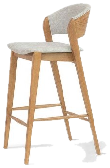
altura 990
ao longo da ilha
Madeira de referência: Pinhão + Louro Pinhão
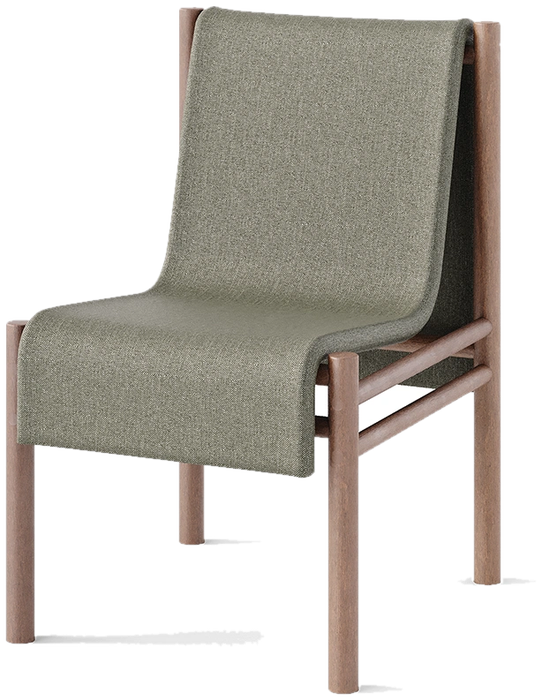
Madeira de referência: Cacau + Louro Pardo
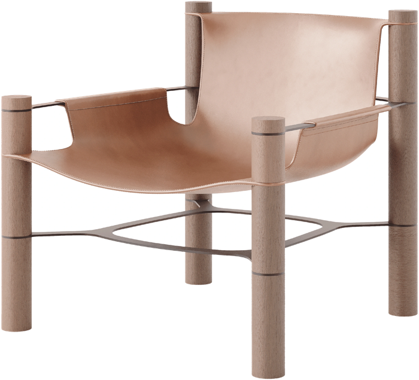
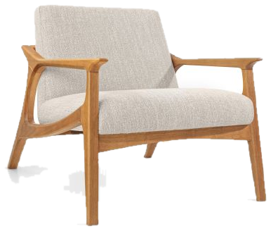
base do tapete
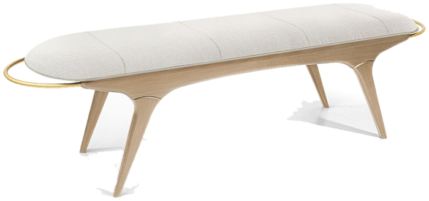
1,60 m · apenas com pesponto
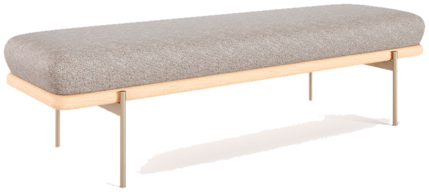
2,00 m
atrás do sofá
Madeira de referência: Nogueira + Carvalho Castanho
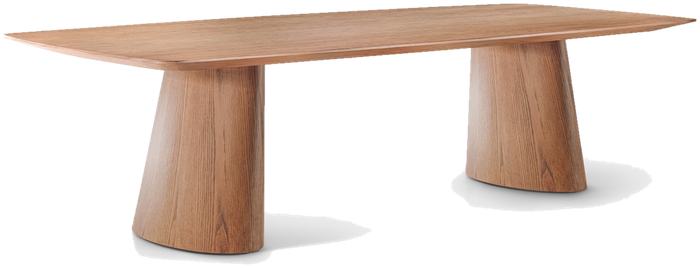
2,50 × 1,20 m
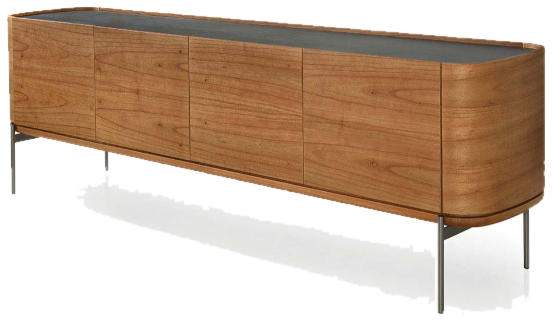
1,85 m
Lista por ambiente
Madeira de referência: Cacau + Louro Pardo
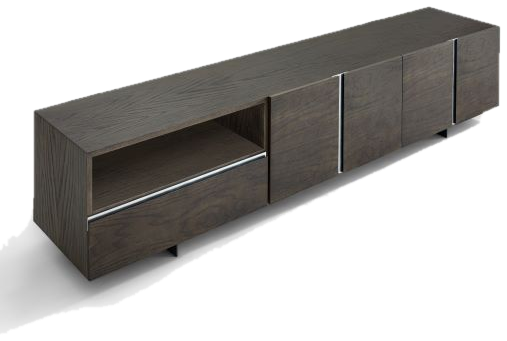
2,50 m
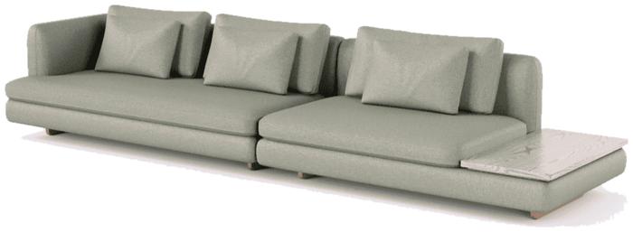
ver layout · braço direito · bandeja esquerda
Madeira de referência: Castanho + Carvalho Castanho
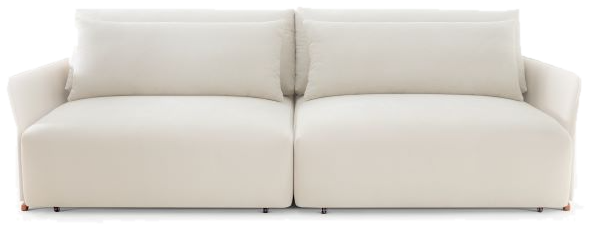
2,76 m
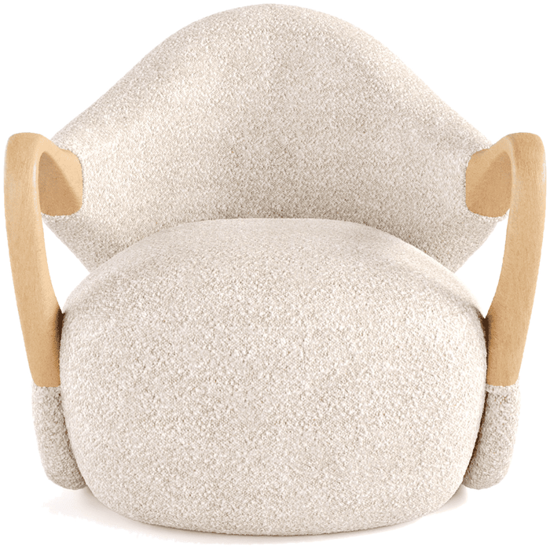
1,85 m
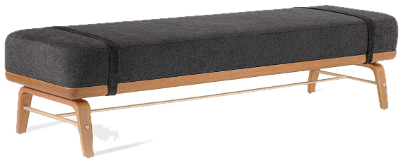
1,80 m
Madeira de referência: Noce + Carvalho Noce
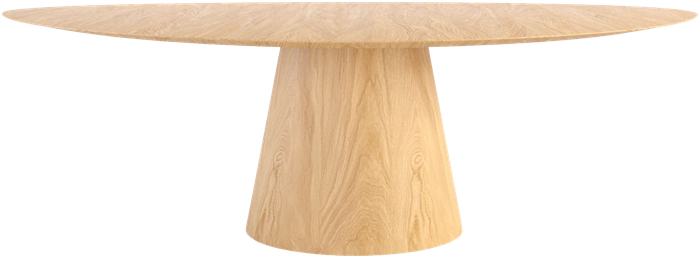
1,60 × 1,20 m
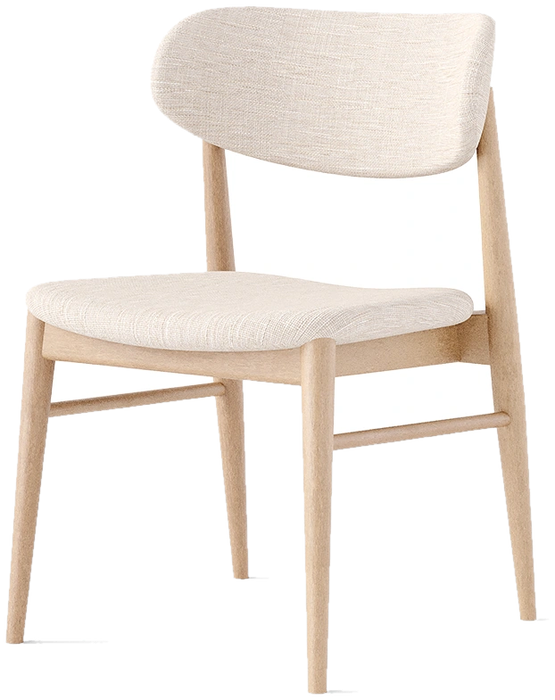
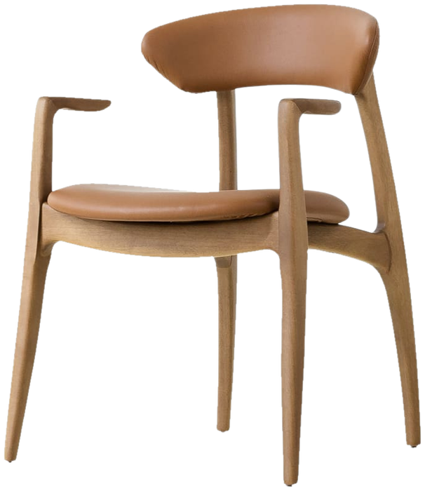
Item do pedido anterior ainda sem posição nesta proposta: Banco Yago 1,60 m. Cores das amostras podem variar conforme tela e impressão.
Pollus Móveis · (17) 3426-1234 · www.pollusmoveis.com.br · @pollusmoveis